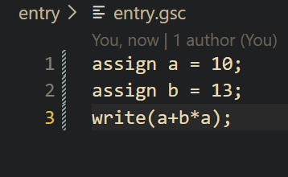
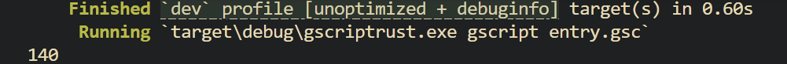
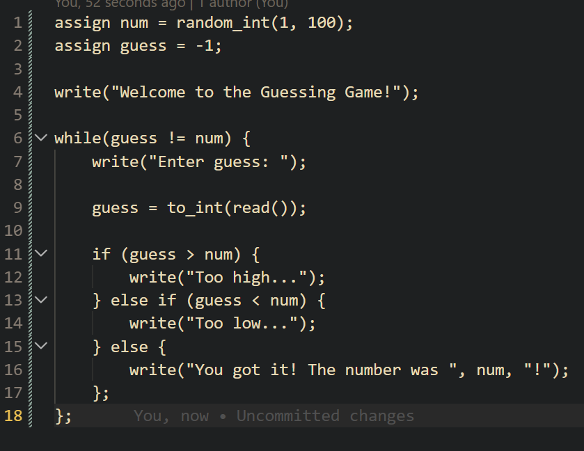
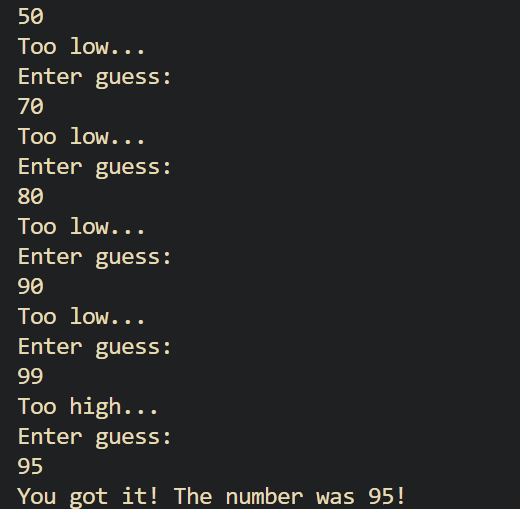
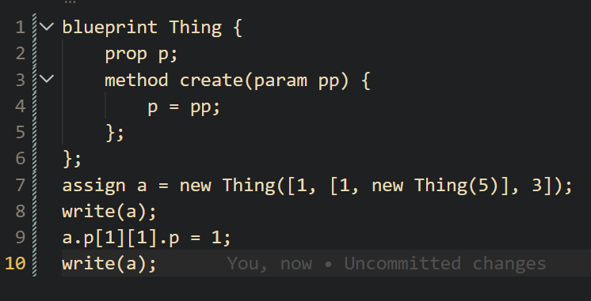
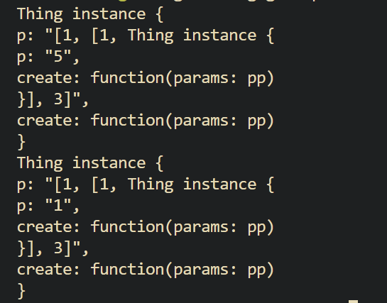
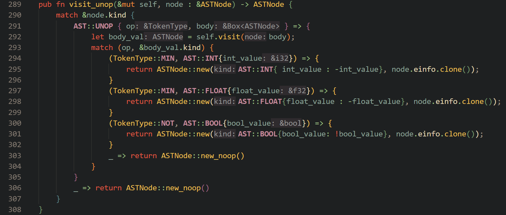
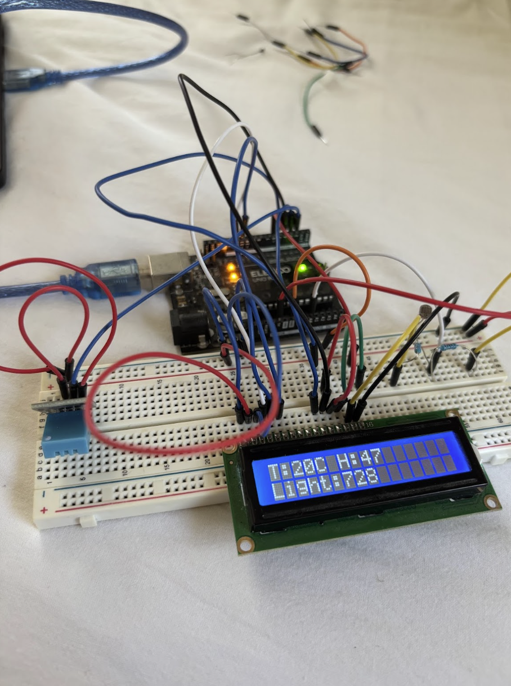
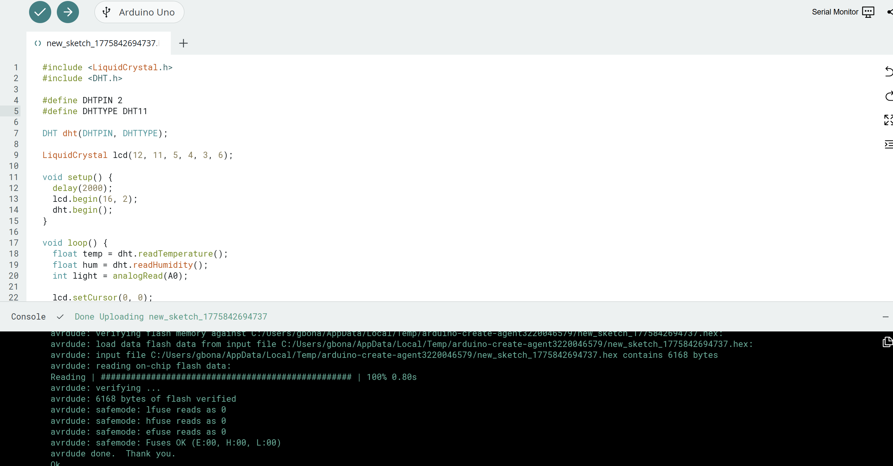

Projects
Below are various projects I have worked on or are currently working on.
The GScript Programming Language
Around my sophomore year of high school, I felt like I had learned enough programming skills to apply them to some major project. After
experimenting with creating websites, games, and various other things, I landed on creating my very own programming language as this "major task"
that I wanted to embark on.
So, I began doing my research. I found a tutorial series on YouTube as well as some other supplemental websites that taught some different skills
about components I would need to know to actually make a proper programming language. Then, on and off through the next couple of months, I went ahead and
created the language. I would add on features as I went, working step by step. In fact, I even changed the base language I wrote my personal language in a couple
of times. First it was C, then Java, and I finally landed on Rust, which I use in the current iteration of my language.
Below there are two pictures: The one up top shows written GScript code and the one below shows the output in the console.


As you can see, my language supports math and printing to the console. It evaluated a + b * a correctly at 140. But there's a whole lot
more it supports, too! To give an overview, you can evaluate basic math and boolean expressions, define variables, define functions, define
structures, have conditional statements, have iteration statements, and have lists! With these features, and with the help of some GScript
built in functions, it's possible to make a simple guessing game!
Below is a preview of some of the code and then some output for this game.


Pretty cool, right? I used to love playing around with my programming language and seeing what kinds of games along the lines of the
guessing game I could make. For example, I also made a rock-paper-scissors game to play either with another person or against the computer.
I'll show one more advanced feature of my language. This feature represents a huge challenge I had while creating the language, which is the
ability to endlessly evaluate bracket and/or dot syntax for lists and/or objects respectively. See below:


Here I'm creating an object and a list and referencing them in a sequential way. Implementing this functionality took quite a lot of thinking
and constant debugging for it to work as intended.
As for the inner workings of the language, it's programmed in Rust as said before, using a recursive construct called an Abstract Syntax Tree (AST).
There are three parts: the lexer, the parser, and the interpreter. The lexer breaks the GScript file into tokens, the parser turns these tokens into
AST nodes, and the interpreter basically looks at each of these AST nodes and executes whatever behavior they encapsulate.
Below is a sneak peek of some of the implementation of the visitor.

And that's basically it for GScript (for now). I'm constantly trying to improve it and add new features. Next in the works is to implement more advanced dot-syntax for primitive types and strings. If you want to see more and keep tracking my progress, check out the GScript repository in my GitHub on my "Contact Me" page!
Discovery Project: Environmental Condition Sensor
This project is an environmental condition sensor that could have countless applications. It is a simple, compact device that just measures temperature and humidity with a DH11 sensor and then light level with a photoresistor. Components used were an Arduino UNO R3, a breadboard, some wires, a USB-to-Arduino cable, a common LCD module, a photoresistor, and a 10K ohm resistor to create a voltage divider for the photoresistor to be able to transmit analogue data. Below is the physical implementation of the system.

In the background is the Arduino, on the far left is the temperature/humidity module, on the far right is the photoresistor setup, and in the middle foreground is the LCD display showing the temperature in C, the humidity percentage, and a level of light in no particular units. Also, below is a preview of some of the simple code used to read the data and transmit it to the LCD display.

The process to create this project went from idea to implementation pretty quickly. I found an Arduino starter kit on Amazon which included all required components, and there was a video tutorial of how each component worked as well as the coding that went along with each component, so I was able to pretty quickly connect the puzzle pieces together and complete the project. The outcome is a cheap and compact device that could have countless applications. You could even theoretically expand on the project and add more components on to it. For example, you could hook up a secondary, larger breadboard and connect a sound module to monitor sound levels. The possibilities are endless.